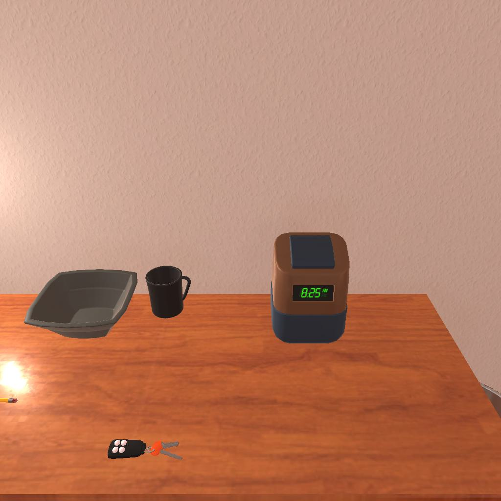

---------------------------------------------------------task: 6---------------------------------------------------------
--------------------------------------------------------------------------------------------------------------------------------------------------------------------
--------------------------------------------------------------------------------------------------------------------------------------------------------------------
Step:--------------------------------------------------------------------------6-------------------------------------------------------------------------------
----------------------------------------
VLM Prompt:
Image1:
Image2:
Image3:
**Instruction**
1. Analyze the provided images to identify all visible household objects and compare the difference between images (e.h. whether the object is opened or not and taken on hand or not), focusing on those relevant to the task description "put some cd on safe."
2. Use the analysis of images and the task hint "The agent must find an object of the desired type, pick it up, find the correct location to place it, and put it down there." to answer the question: what is the most reasonable action in the choices for the task description "put some cd on safe"?
3. Decide and write the answer using the template: The answer is: (i): , where i is the real number. If there is no desired object in images, search every place based on **Initial Observation** to find the object. And if no one is exactly correct, choose a similar answer.
**Initial Observation**
You are in the middle of a room. Looking quickly around you, you can see bed (1-2), dresser (1), sidetable (1-2), drawer (1-11), desk (1), garbagecan (1), safe (1)
**Answer Choices**
(1): go to bed 1
(2): go to dresser 1
(3): go to bed 2
(4): go to sidetable 1
(5): go to drawer 1
(6): go to drawer 2
(7): go to sidetable 2
(8): go to drawer 3
(9): go to drawer 4
(10): go to garbagecan 1
(11): go to drawer 5
(12): go to drawer 6
(13): go to drawer 7
(14): go to drawer 8
(15): go to drawer 9
(16): go to drawer 10
(17): go to drawer 11
(18): open safe 1
(19): close safe 1
(20): take bowl 2 from safe 1
(21): take mug 2 from safe 1
(22): take cd 1 from safe 1
(23): take pen 1 from safe 1
**Answer**
Let's think step by step by following the instructions.
----------------------------------------
----------------------------------------
Original Response:
First, we analyze the images provided. In Image 1, we see a safe, a mug, a bowl, and a remote on a dresser. In Image 2 and Image 3, we see the safe, a bowl, a mug, a pen, and a CD on the same dresser. The CD is the object of interest for the task "put some cd on safe."
Comparing the differences between the images, we can see that the CD is already on top of the safe in both Image 2 and Image 3. There is no action of the CD being opened or taken in hand.
Based on the **Initial Observation**, we know we are in a room with various furniture items listed, and from the images, we know the CD is already on top of the safe. Therefore, we do not need to search for the CD or pick it up.
Considering the task description "put some cd on safe" and the analysis of the images, the most reasonable action would be to ensure the CD is properly placed on the safe. However, since the CD is already on the safe, no further action is required. The task has been completed as per Image 2 and Image 3.
Therefore, none of the answer choices directly apply to the task's current state. The closest answer choice to acknowledge the task's completion would be to open the safe if we were to secure the CD inside, but that is not explicitly stated in the task description.
The answer is: (18): open safe 1.
----------------------------------------
----------------------------------------
>>> Refine Original VLM Response and Get Pure Action: open safe 1
----------------------------------------
-----------------------------------------------------------------
Running time: 13.797377824783325 seconds
Total Money: 2.8001200000000006
-----------------------------------------------------------------
-----------------------------------------------------------------
Text Observation:You open the safe 1. The safe 1 is open. In it, you see a bowl 2, a mug 2, a cd 1, and a pen 1.
-----------------------------------------------------------------
UNSUCCEED